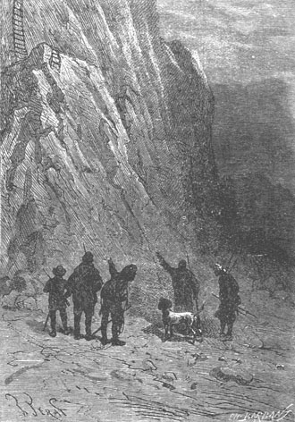
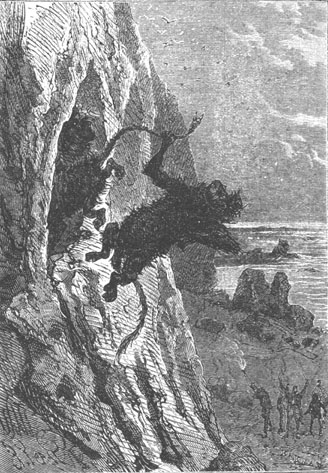
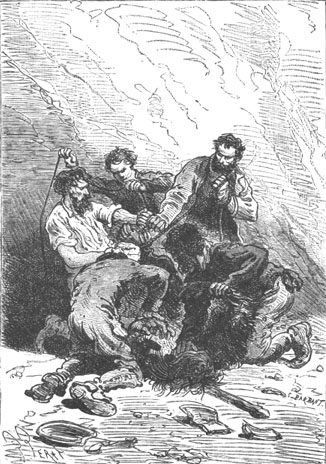

Cyrus Smith stopped without saying a word. His companions searched in the dark, against the wall in the event that the wind had displaced the ladder, and on the ground in case it had become detached... but the ladder had absolutely disappeared. As to seeing whether a gust of wind had raised it up to the first landing at the center point of the wall, it was impossible on this dark night.
“If it is a joke,” cried Pencroff, “it is wicked. To arrive at your home and not find the stairway to your room, that is nothing to laugh at for tired men.”
Neb was also absorbed in exclamations!
“This was not done by the wind!” said Herbert.
“I begin to think that strange things happen on Lincoln Island,” said Pencroff.
“Strange?” replied Gideon Spilett, “but no, Pencroff, nothing is more natural. Someone has come during our absence, taken possession of our dwelling and drawn up the ladder.”
“Someone!” cried the sailor, “but who?...”
“Perhaps the hunter with the lead bullet,” replied the reporter. “What other explanation is there for our misadventure?”
“Well, if there is someone up there,” replied Pencroff swearing, because he became impatient, “I’ll call to him and he’ll have to answer.”
And with a thunderous voice the sailor let out a prolonged “Ahoy” whose echoes reverberated powerfully.
The colonists listened and thought that they heard from the height of Granite House a sort of mocking laughter whose nature they did not recognize. But no voice replied to Pencroff’s voice. Uselessly he began to call again.
This truly was something to perplex the most indifferent of men in the world and the colonists were not among that kind. In the situation that the colonists found themselves, every incident was serious and certainly, during the seven months that they had lived on the island nothing had presented itself with such a surprising character.
Forgetting their fatigue and overcome by this strange event, they remained at the foot of Granite House not knowing what to think, not knowing what to do, questioning without being able to reply, and multiplying hypotheses one more implausible than the other. Neb lamented and was very disappointed at not being able to get into his kitchen especially since the provisions were used up on the trip and they had no means of getting more at the moment.
“My friends,” Cyrus Smith then said, “there is nothing for us to do but wait for daybreak when we will act as circumstances dictate. But while waiting, let us go to the Chimneys. There we will have shelter and if we cannot eat then at least we can sleep.”
“But who is this cool customer who played this trick on us?” Pencroff asked still one more time, unable to leave.
Whoever the “cool customer” was, the only thing to do, as the engineer said, was to go to the Chimneys and there await the return of day. Nevertheless an order was given to Top to remain under the windows of Granite House and when Top received an order, Top executed it without comment. The worthy dog remained at the foot of the wall while his master and his companions found refuge among the rocks.

An order was given to Top to remain under the windows.
To say that the colonists, in spite of their weariness, slept well on the sand of the Chimneys would alter the truth. Not only were they very anxious about this new incident be it the result of chance whose natural causes would be apparent during the day or, on the contrary, be it the work of a human being, but in addition they had very bad sleeping arrangements. Whatever it was, one or the other, their dwelling was occupied at the moment and they could not enter it.
Now Granite House was more than their dwelling. It was their storehouse. It had all the material of the colony, arms, instruments, tools, munitions, food reserves, etc. If all this was plundered, the colonists would have to begin again to make arms and tools. This was a serious thing. Thus, yielding to anxiety, one or the other went out for a moment to see if Top was guarding well. Cyrus Smith alone waited with his usual patience, exasperated at this absolutely inexplicable event, and indignant at himself for thinking that around him, above him perhaps, there was a power to which he could not give a name. Gideon Spilett fully shared his opinion in this regard and both repeatedly spoke in whispers of these inexplicable circumstances which were beyond their insight and their experience. There surely was a mystery on this island, but how could they discover it? Herbert did not know what to imagine and wanted to question Cyrus Smith. As to Neb, he dismissed the matter by telling himself that all this was not his concern, that it was his master’s business, and if it were not for his respect for his companions, the worthy negro would have slept that night just as well as if he were lying in his bed in Granite House.
Lastly, more than the others, Pencroff was infuriated and he was, honestly, very angry.
“It is a practical joke,” he said, “it is a joke that someone is playing on us. Well, I do not like practical jokes and woe be unto the joker if I lay my hands on him.”
At the first light of day in the east, the well armed colonists went to the shore at the edge of the reef. Granite House, in direct line with the rising sun, would not be long in lighting up under the dawn’s light and, in fact, before five o’clock, the windows, whose shutters were closed, appeared through the curtain of the foliage.
From this shore all was in order, but a cry escaped from the colonists when they saw the wide open door which they had closed before their departure.
Someone was in Granite House. There was no longer any doubt of that.
The upper ladder, ordinarily attached to the landing at the door, was in its place, but the lower ladder had been drawn up to the landing. It was more than evident that the intruders had wanted to be protected from any surprise.
As to discovering who and how many there were, this was still impossible because none of them had shown themselves.
Pencroff shouted again.
No reply.
“The rascals!” cried the sailor. “There they sleep quietly as if they were in their own home. Ahoy! Pirates, bandits, privateers, sons of John Bull!”
When Pencroff, in his capacity as an American, had called someone “son of John Bull,” he had risen to the final limit of insult.
It was now full daylight and the facade of Granite House was illuminated by the sun’s rays. But the inside was as quiet and calm as the outside.
The colonists asked themselves if Granite House was or was not occupied but the position of the ladder showed that this was so, and it was also certain that the occupants, whoever they were, had not been able to flee. But how could they get to them?
Herbert then had the idea of attaching a cord to an arrow and of shooting this arrow so that it would pass between the first rungs of the ladder which was hanging from the landing outside the door. By means of the cord they could then unravel the ladder to the ground and re-establish communication between the ground and Granite House.
There was evidently nothing else to do and with a little skill it might succeed. Very fortunately, bows and arrows had been placed in a corridor of the Chimneys where they also found a few hundred feet of a light hibiscus cord. Pencroff unraveled this cord which he attached to a feathered arrow. Then Herbert, after having placed the arrow on his bow, took careful aim at the hanging end of the ladder.
Cyrus Smith, Gideon Spilett, Pencroff and Neb remained in the background in order to observe what happened at the windows of Granite House. The reporter, his carbine at his shoulder, took aim at the door.
The bow was released, the arrow hissed through the air reaching the cord and passing between the last two rungs.
The operation had succeeded.
Herbert immediately seized the end of the cord; but as soon as he was about to pull the ladder to the ground, a hand reached out between the wall and the door, seized it and pulled it back into Granite House.
“Triple rascals!” cried the sailor, “if a gunshot will make you happy, you will not have long to wait.”
“But who was it?” asked Neb.
“Who? You did not recognize?...”
“No.”
“But it was an ape, a macaco, a sapajou, a guenon, an orang, a baboon, a gorilla, a saki! Our dwelling has been invaded by apes who climbed up the ladder during our absence.”
And at this moment, as if to prove the sailor right, three or four quadrumanes showed themselves at the windows, whose shutters they had pushed aside, and greeted the true owners of the place with a thousand contortions and grimaces.
“I know full well that this is only a joke!” cried the sailor, “but one of the jokers will pay for the others!”
The sailor, gun to his shoulder, took a quick aim at one of the apes and fired. All disappeared, except one of them who, mortally wounded, fell to the ground.

The ape, mortally wounded...
This ape, of a large size, appeared to be of the first order of quadrumanes, there was no mistake about that. Whether it was a chimpanzee, an orang, a gorilla or a gibbon, it ranked among those anthropomorphs, so named because of their resemblance to the human race. However, Herbert declared that it was an orangutan and we know that the lad was well versed in zoology.
“A magnificent beast!” cried Neb.
“Magnificent, as you wish!” replied Pencroff, “but I still do not see how we will be able to enter our home.”
“Herbert was a good archer,” said the reporter, “and his bow is here. He’ll begin again...”
“Fine! These apes are mischievous,” cried Pencroff. “They will not show themselves again at the windows and we will not be able to kill them, and when I think of the damage they can do to the rooms and to the storeroom...”
“Be patient,” replied Cyrus Smith. “These animals cannot hold us in check for too long!”
“I will be sure of that when they are buried,” replied the sailor. “And do you know, Mister Smith, how many dozens of these jokers there are up there?”
It would be difficult to reply to Pencroff. As for the lad trying again, it was not easy because the lower end of the ladder had been pulled inside the door and when they pulled again on the cord, the cord broke and the ladder did not come down.
It was truly embarrassing. Pencroff raged. The situation had a certain comic side to it that he did not find funny. It was evident that the colonists would end by regaining their dwelling and chasing out the intruders but when and how? That they could not say.
Two hours passed during which the apes avoided showing themselves; but they were still there, and three or four times a nose or a paw passed by the door or the windows which was greeted with a gunshot.
“Let us hide,” the engineer then said. “Perhaps the apes will think that we have left and they will expose themselves again. But Spilett and Herbert can lie in wait behind the rocks and fire on all that will appear.”
The engineer’s orders were obeyed and while the reporter and the lad, the two best archers of the colony, posted themselves at easy range but out of sight of the apes, Neb, Pencroff and Cyrus Smith went to the plateau so as to reach the forest and kill some game because mealtime had come and no provisions remained.
After a half-hour the hunters returned with a few rock pigeons which they roasted for better or for worse. Not an ape had reappeared.
Gideon Spilett and Herbert went to take their part of the meal while Top watched under the windows. Then, after having eaten, they returned to their post.
Two hours later the situation still had in no way changed. The quadrumanes no longer gave any sign of existence and it seemed that they had disappeared; but what appeared more probable was that frightened by the death of one of their fellows, terrified by the detonations from the guns, they remained quiet on the floor of the rooms of Granite House or even in the storeroom. And when they thought of the riches enclosed in this storeroom, the patience advised by the engineer ended by degenerating into a violent irritation and frankly there was reason for it.
“Decidedly, this is very stupid,” the reporter said finally, “and there really is no way to end this!”
“We must send these vagabonds packing!” cried Pencroff. “We will get back in the end even if it takes twenty days, even if we have to fight them hand to hand, but is there no way to get to them?”
“Yes,” replied the engineer, who got a bright idea.
“One idea?” said Pencroff. “Well that’s good, since there are no others. And what is it?”
“Let us try to redescend into Granite House by the old passageway of the lake,” replied the engineer.
“Ah! A thousand devils!” cried the sailor. “Why didn’t I think of it?”
It was in fact the only means of penetrating into Granite House in order to combat the band and of expelling it. The orifice of the overflow was, it is true, closed by a wall of cemented rocks which it would be necessary to sacrifice but they would be free to make it again. Fortunately, Cyrus Smith still had not completed his project of hiding this orifice by submerging it under the waters of the lake because he had not had the time to do it. It was already past noon when the colonists, well armed and provided with ../pics and picaxes, left the Chimneys. They passed under the windows of Granite House after having ordered Top to remain at his post. They intended to ascend the left bank of the Mercy in order to reach Grand View Plateau.
But they had not gone fifty paces in this direction when they heard the dog barking furiously. It was a desperate call.
They stopped.
“Run!” said Pencroff.
And everyone descended the bank as fast as he could. Rounding the bend they saw that the situation had changed.
In fact the apes, terrorized by some unknown cause, were trying to get out. Two or three ran and jumped from one window to the other with the agility of clowns. They did not even think of replacing the ladder which would have facilitated their descent and in their fright perhaps they had forgotten this means of getting out. Soon five or six were in a position to be fired upon and the colonists, easily seeing them, fired. Some, wounded or dead, fell back into the rooms uttering sharp cries. Others fell outside, killed by their fall, and in a few moments they could suppose that there no longer were any living quadrumanes in Granite House.
“Hurrah!” cried Pencroff. “Hurrah! Hurrah!”
“So many hurrahs!” said Gideon Spilett.
“Why not? They are dead,” replied the sailor.
“Agreed, but this does not give us the means of returning to our home.”
“Let us go to the overflow passage,” replied Pencroff.
“Without doubt,” said the engineer. “However, it would be preferable...”
At this moment, as if in response to Cyrus Smith’s comment, they saw the ladder glide onto the landing outside the door. Then it unraveled and fell to the ground.
“Ah! A thousand pipes! That’s considerate!” cried the sailor, looking at Cyrus Smith.
“Very considerate!” murmured the engineer, stepping on the first rung of the ladder.
“Take care, Mister Cyrus!” cried Pencroff, “there may still be several of these apes...”
“We will soon know,” replied the engineer, without stopping.
All his companions followed him and in a minute they arrived at the landing of the door.
They looked everywhere. No one was in the rooms or in the storeroom which had been respected by the band of quadrumanes.
“So, and the ladder?” cried the sailor. “Who then was the gentleman who returned it?”
But at this moment a cry was heard and a large ape, who had taken refuge in the passageway, threw himself into the hall, pursued by Neb.
“Ah! The bandit!” cried Pencroff.
And with axe in hand he was about to crack the animal’s skull when Cyrus Smith stopped him and said to him:
“Spare him, Pencroff.”
“Show mercy to this blackamoor?”
“Yes! It was he who threw us the ladder.”
And the engineer said this in so strange a voice that it was difficult to know if he spoke seriously or not.
Nevertheless they threw themselves on the ape who, after having defended himself valiantly, was thrown to the ground and tied.

The ape was thrown to the ground and tied.
“Whew!” cried Pencroff. “And now what will we make of him?”
“A servant!” replied Herbert.
And in speaking so the lad really was not joking because he knew that use could be made of this intelligent race of quadrumanes.
The colonists then approached the ape and looked at him. He belonged to that species of anthropomorphs whose facial angle in not significantly less than that of the Australians and of the Hottentots. It was an orang who, as such, had neither the ferocity of the baboon, nor the thoughtlessness of the macaco, nor the filthy ways of the saguin, nor the impatience of the barbary ape nor the bad instincts of the cynocephalus. It was of that family of anthropomorphs having a quasi-human intelligence. Employed in homes, they can serve at tables, clean rooms, care for clothes, polish shoes, skillfully handle a knife, a spoon and a fork and even drink wine... all this as well as the best servant on two feet and no feathers. It is said that Buffon possessed one of these apes who served him for a long time as a faithful and zealous servant.
The one that they had tied up in the large hall of Granite House was a large devil, six feet tall, with an admirably proportioned body, a large chest, a head of average size, a facial angle of sixty five degrees, a rounded cranium, a prominent nose, a skin covered with a sleek, gentle and glossy hair—in short an accomplished type of anthropomorph. His eyes, a little smaller than human eyes, shown with a vivacious intelligence, his white teeth glistened under his moustache and he had a small beard glazed with a hazel color.
“A fine lad!” said Pencroff. “If only we knew his language, we could speak to him.”
“Are you serious, master?” said Neb. “Will we take him on as a servant?”
“Yes, Neb,” replied the engineer, smiling. “But do not be jealous!”
“And I hope that he will make an excellent servant,” added Herbert. “He seems to be young, his education will be easy and we will not be obliged to use force to subjugate him, nor to pull his teeth as is done in similar circumstances. He will become attached to his masters if we are good to him.”
“And that we will be,” replied Pencroff, who had completely forgotten his grudge against “the jokers.”
Then, approaching the orang:
“Well, my boy,” he asked him. “How goes it?”
The orang replied with a small growl that did not denote any bad temper.
“Do we wish then to become a part of the colony?” asked the sailor, “to enter the service of Mister Cyrus Smith?”
The ape made another approving growl.
“And we will be content with our nourishment for our wages?”
A third affirmative growl.
“His conversation is a little monotonous,” said Gideon Spilett.
“Good!” replied Pencroff, “the best servants are those who speak the least. So then, no wages!—Do you understand my boy? To begin with, we will give you no wages but later on we will double it if we are satisfied with you!”
Thus the colony added a new member who could be of service. As to his name, the sailor asked that he be called Jupiter, or Jup for short, in memory of another ape he had known.
And so, without further ceremony, Master Jup was installed at Granite House.